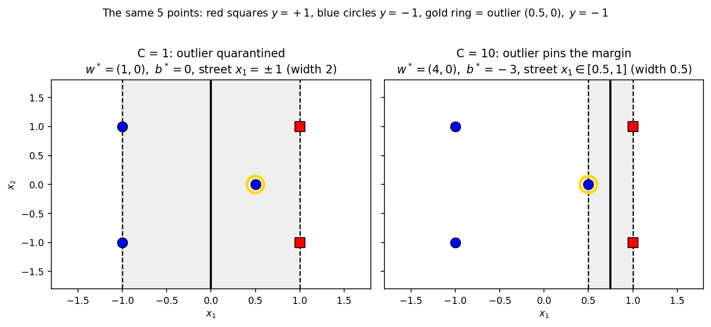
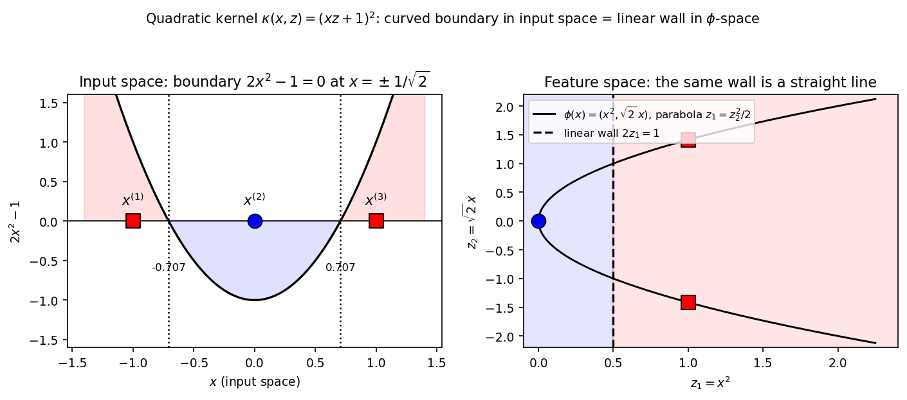

Chapter 33: Soft-margin SVM and the kernel trick
Part IV — Machine Learning Techniques. Builds on: the hard-margin SVM (Ch 32 — primal, dual, KKT, support vectors), kernel definitions and the Gram matrix (§24.10), the kernel pattern (§27.10(ii)). Sources: MLT Week 8 lecture slides (soft-margin primal, slack variables, the hinge-loss form, kernel SVMs), the MLT Week 11 TA notes (soft-margin dual with the box constraint, the KKT case analysis).
33.1 The lecture’s closing question
Chapter 32 ended (§32.8) with the lecture’s uncomfortable question: how do we adapt the SVM when the data has outliers? Two weaknesses force it:
- Infeasible on non-separable data (§32.3). The hard-margin constraints \(y^{(i)}(w^T x^{(i)} + b) \ge 1\) demand every point on the correct side with margin \(\ge 1\). One mislabelled point and the feasible set is empty — no answer at all.
- Outlier sensitivity (§32.7(i)). Even when the data is separable, a single outlier can wreck the answer.
eg (one outlier collapses the street). Take the symmetric square of Chapter 32, Problem 3 — \(x^{(1)} = (1,1),\; x^{(2)} = (1,-1)\) labelled \(+1\); \(x^{(3)} = (-1,1),\; x^{(4)} = (-1,-1)\) labelled \(-1\) — whose hard-margin answer is the clean street \(w^\star = (1,0)\), \(b^\star = 0\), width \(2\). Now drop one outlier into it: \(x^{(5)} = (0.5, 0)\), \(y^{(5)} = -1\), a \(-1\) point sitting on the \(+1\) side. The hard-margin dual (no box yet — §32.4’s dual) solves to \(\alpha^\star = (4, 4, 0, 0, 8)\):
\[w^\star = 4(1,1) + 4(1,-1) + 8(-1)(0.5,0) = (4, 0), \qquad b^\star = -3\]
(check: \(y^{(1)}(w^{\star T}x^{(1)} + b^\star) = 4 - 3 = 1\) ✓; \(y^{(5)}(w^{\star T}x^{(5)} + b^\star) = -1(2-3) = 1\) ✓; points 3, 4 sit at margin \(7 \ge 1\) with \(\alpha = 0\) ✓). The street is now \(x_1 \in [0.5, 1]\) — width \(2/\lVert w^\star\rVert = 0.5\), down from \(2\). One point moved the wall from \(x_1 = 0\) to \(x_1 = 0.75\) and quartered the margin. (A fine grid search over the symmetric feasible set, plus a full 5-D numerical solve — both confirm \(D = 8\) is the maximum; see the review log.)
The lecture’s own warning, quoted in §32.8: “kernels can help but is not the right way to solve this.” Kernels bend the wall; they don’t forgive bad points. The answer to outliers is a different one — the soft-margin primal.
Basically, … “Hard-margin SVM is a strict teacher: one kid out of line and class is cancelled (infeasible) — or, if the kid technically fits, the whole seating plan gets rearranged around him (the street collapses from width 2 to width 0.5). The soft margin is the teacher learning to tolerate a little mischief.”
33.2 Slack variables: the bribe
The slide’s fix: give every training point its own slack variable \(\xi_i \ge 0\) — the “bribe” (§32.8) the point pays to violate the margin. The constraint relaxes from “functional margin \(\ge 1\)” to:
\[\boxed{y^{(i)}(w^T x^{(i)} + b) \ge 1 - \xi_i, \qquad \xi_i \ge 0 \quad \forall i}\]
Each point must now sit only at “distance” \(1 - \xi_i\) from the wall (slide 30) instead of the hard distance \(1\). What \(\xi_i\) says about the point:
- \(\xi_i = 0\) — the point is on or beyond its supporting hyperplane. No bribe paid; behaves exactly like a hard-margin point.
- \(0 < \xi_i \le 1\) — the point slipped inside the street but is still on the correct side of the wall. Small bribe.
- \(\xi_i > 1\) — the point crossed the wall itself: misclassified. Large bribe.
Note (a slide typo). Slide 30 writes the slack condition as \(\xi^{(i)} > 0\); slide 32 corrects it to \(\xi^{(i)} \ge 0\). The \(\ge\) is the right one — a well-behaved point must be allowed \(\xi_i = 0\).
Basically, … “Slack is a hall pass. \(\xi_i = 0\) means the point stayed in its seat (no pass needed). A small \(\xi_i\) means it wandered into the aisle but stayed on its side. \(\xi_i > 1\) means it crossed into enemy territory. Every pass costs money — which is what the primal charges for.”
33.3 The soft-margin primal
Bribes can’t be free, or every point would take one. The slide (p. 32) penalizes them in the objective:
\[\boxed{\min_{w, b, \xi}\ \frac{1}{2}\lVert w \rVert^2 + C\sum_{i=1}^{n} \xi_i \quad \text{s.t.}\quad y^{(i)}(w^T x^{(i)} + b) \ge 1 - \xi_i,\ \ \xi_i \ge 0\ \ \forall i}\]
The regularization constant \(C\) sets the exchange rate between “wide street” and “few bribes” — exactly as the slide presents it:
- \(C\) large — bribes are ruinously expensive. The SVM becomes strict and tries to get every point to the correct side (in the limit, the hard margin back).
- \(C\) small — bribes are cheap. The SVM slacks and allows many misclassifications or points inside the margin, in exchange for a wider street.
Note (the hinge-loss form). For \(C \ne 0\), the optimizer pushes each \(\xi_i\) as low as its constraint allows (slide 34): \(\xi_i = 1 - y^{(i)}(w^T x^{(i)} + b)\) when the margin is \(< 1\), else \(0\). That is \(\boxed{\xi_i = \max\big(1 - y^{(i)}(w^T x^{(i)} + b),\, 0\big)}\) — the hinge loss, which gets its full treatment in Chapter 35. Plugging it in, the primal becomes the unconstrained problem \(\min_{w,b}\ \frac12\lVert w\rVert^2 + C\sum_i \max\big(1 - y^{(i)}(w^T x^{(i)} + b),\, 0\big)\).
Note (the endpoints, from the TA notes). \(C = 0\) makes every bribe free, so the dual forces all \(\alpha_i = 0\) and \(w^\star = 0\) — the classifier gives up on the data entirely. \(C = \infty\) is the hard margin (§33.1’s eg is the \(C = \infty\) answer).
Basically, … “The primal now has two bills: the street-width bill \(\frac12\lVert w\rVert^2\) and the bribe bill \(C\sum \xi_i\). \(C\) is the exchange rate. Crank it up and bribes cost a fortune — everyone behaves, street be damned. Drop it low and bribes are pocket change — the street stays wide and the troublemakers just pay up.”
33.4 The soft-margin dual: the box constraint
Same four moves as §32.4, one extra multiplier per point. With \(\alpha_i \ge 0\) on the margin constraints and \(\mu_i \ge 0\) on \(\xi_i \ge 0\) (the TA notes’ derivation, Week 11):
\[L(w, b, \xi, \alpha, \mu) = \frac{1}{2}\lVert w \rVert^2 + C\sum_{i=1}^{n}\xi_i + \sum_{i=1}^{n}\alpha_i\big(1 - \xi_i - y^{(i)}(w^T x^{(i)} + b)\big) - \sum_{i=1}^{n}\mu_i\xi_i.\]
Stationarity (§11.3):
- \(\dfrac{\partial L}{\partial w} = 0 \;\Rightarrow\; \boxed{w^\star = \sum_{i=1}^{n} \alpha_i y^{(i)} x^{(i)}}\) — the same vote as §32.4.
- \(\dfrac{\partial L}{\partial b} = 0 \;\Rightarrow\; \boxed{\sum_{i=1}^{n} \alpha_i y^{(i)} = 0}\).
- \(\dfrac{\partial L}{\partial \xi_i} = 0 \;\Rightarrow\; C - \alpha_i - \mu_i = 0\), i.e. \(\boxed{\alpha_i + \mu_i = C}\). Since \(\mu_i \ge 0\), this caps the vote: \(\boxed{0 \le \alpha_i \le C}\).
The box constraint. Substituting back, the \(\xi_i\) terms cancel and the dual is:
\[\boxed{\max_{\substack{0 \le \alpha_i \le C \\ \sum_i \alpha_i y^{(i)} = 0}}\ \ \sum_{i=1}^{n} \alpha_i \;-\; \frac{1}{2}\sum_{i,j=1}^{n} \alpha_i \alpha_j\, y^{(i)} y^{(j)}\, {x^{(i)}}^T x^{(j)}}\]
The objective is identical to the hard-margin dual (§32.4) — only the feasible set shrank: each \(\alpha_i\) now has a ceiling \(C\). No point may cast more than \(C\) votes, so no single outlier can drag the whole wall around.
The KKT case analysis (the TA notes’ summary page — three kinds of points):
- \(\alpha_i^\star = 0 \;\Rightarrow\; \xi_i^\star = 0\) and \(y^{(i)}(w^{\star T}x^{(i)} + b^\star) \ge 1\). Safe point beyond the margin: no vote, no bribe.
- \(0 < \alpha_i^\star < C \;\Rightarrow\; \xi_i^\star = 0\) and \(y^{(i)}(w^{\star T}x^{(i)} + b^\star) = 1\). On the supporting hyperplane: votes, pays nothing. (These are the only points from which \(b^\star\) can be read off, as in §32.5(iv).)
- \(\alpha_i^\star = C \;\Rightarrow\; y^{(i)}(w^{\star T}x^{(i)} + b^\star) \le 1\) with \(\xi_i^\star = 1 - y^{(i)}(w^{\star T}x^{(i)} + b^\star) \ge 0\). Inside the street or misclassified: vote maxed out, pays the bribe.
Read backwards, it is just as useful: margin \(> 1 \Rightarrow \alpha_i^\star = 0\); margin \(= 1 \Rightarrow \alpha_i^\star \in [0, C]\); margin \(< 1 \Rightarrow \alpha_i^\star = C\). So \(\alpha_i^\star = C\) is the detector for “this point is inside the margin or misclassified” — the TA notes’ words: “points where either \(x_i\) is incorrectly classified by \(w^\star\) or barely classified but with margin \(\le 1\).”
Basically, … “The dual is the same mirror as Chapter 32, except every datapoint’s vote is now capped at \(C\). The KKT bouncer sorts points into three lines: no vote and no bribe (safe), a vote but no bribe (on the wall), max vote and pays the bribe (troublemaker). Spot a point with \(\alpha_i = C\) and you’ve found your outlier.”
33.5 Worked example: one outlier, two values of \(C\)
The §33.1 dataset: the four square points plus the outlier \(x^{(5)} = (0.5, 0)\), \(y^{(5)} = -1\).
The hard-margin answer (\(C = \infty\)) was already computed in §33.1: \(\alpha^\star = (4, 4, 0, 0, 8)\), \(w^\star = (4,0)\), \(b^\star = -3\), street \(x_1 \in [0.5, 1]\), width \(0.5\). The outlier’s vote (\(\alpha_5 = 8\)) pins the wall.
The soft-margin answer at \(C = 1\). Guess from the KKT cases: the outlier hits the cap (\(\alpha_5 = C = 1\)); the other four sit exactly on the margin, strictly inside the box.
Step 1 — symmetry. The data is symmetric in \(x_2\), so \(\alpha_1 = \alpha_2 =: a\), \(\alpha_3 = \alpha_4 =: c\). The constraint \(\sum_i \alpha_i y^{(i)} = 0\) gives \(2a - 2c - 1 = 0\), i.e. \(a - c = 0.5\).
Step 2 — the wall from the on-margin points. Points 1–4 have \(0 < \alpha_i < C\), so they sit exactly on the margin: \(y^{(1)}(w^T x^{(1)} + b) = 1\) and \(y^{(3)}(w^T x^{(3)} + b) = 1\). With \(w = a(1,1) + a(1,-1) + c(1,-1) + c(1,1) - 1\cdot(0.5,0) = (2a + 2c - 0.5,\ 0)\):
\[y^{(1)}(w^T x^{(1)} + b) = (2a+2c-0.5) + b = 1, \qquad y^{(3)}(w^T x^{(3)} + b) = (2a+2c-0.5) - b = 1.\]
Adding: \(2(2a + 2c - 0.5) = 2\), so \(\boxed{w^\star = (1, 0)}\) and \(\boxed{b^\star = 0}\) — the clean street is back.
Step 3 — the votes. \(2a + 2c = 1.5\) and \(a - c = 0.5\) give \(\boxed{\alpha^\star = (0.625,\ 0.625,\ 0.125,\ 0.125,\ 1)}\).
Step 4 — verify everything (KKT). Margins \(y^{(i)}(w^{\star T}x^{(i)} + b^\star)\): points 1–4 exactly \(1.0\) ✓ (\(0 < \alpha_i < 1 = C\), \(\xi_i = 0\) ✓); point 5: \(-1(0.5) = -0.5 < 1\) ⇒ \(\xi_5 = 1.5\), \(\alpha_5 = C\) ✓. Complementary-slackness products \(\alpha_i(1 - \xi_i - \text{margin}_i)\): \(0.625\cdot 0\), \(0.125\cdot 0\), \(1\cdot(1 - 1.5 + 0.5) = 0\) ✓. Primal \(\frac12\lVert w^\star\rVert^2 + C\sum\xi_i = 0.5 + 1.5 = 2.0\); dual \(\sum\alpha_i - \frac12\alpha^TQ\alpha = 2.5 - 0.5 = 2.0\) ✓ (strong duality). A grid search over the symmetric feasible set (plus a full 5-D numerical solve and a 2M-point randomized check) confirms \(2.0\) is the dual maximum — see the review log.
The moral. Same five points, two exchange rates: at \(C = 1\) the outlier is quarantined (\(\alpha_5\) capped, pays \(\xi_5 = 1.5\), misclassified) and the street is the clean \(x_1 = \pm 1\) of width \(2\); at \(C = 10\) (already the \(C = \infty\) answer — all \(\alpha_i < C\), identical solution at \(C = 100\)) the outlier pins the wall and the street collapses to width \(0.5\).

Basically, … “\(C\) is the bouncer’s strictness dial. At \(C = 1\) the bouncer lets the troublemaker pay a fine (\(\xi_5 = 1.5\)) and keeps the wide street. At \(C = 10\) the bouncer is so strict the fine might as well be infinite — the troublemaker gets his way and the street shrinks to fit him.”
33.6 The kernel trick for SVMs
The soft-margin dual (§33.4) sees the data only through inner products \({x^{(i)}}^T x^{(j)}\) — the same doorway §32.4’s “Basically” pointed at. Suppose the classes aren’t linearly separable at all (no wall in \(\mathbb{R}^d\) works, whatever \(C\) you pick). The lecture’s second idea: lift \(x \mapsto \phi(x)\) into a higher-dimensional space where a wall does exist — slide 42’s example \(\phi(x) = (x_1^2,\ \sqrt{2}\,x_1x_2,\ x_2^2)^T\) turns an elliptical boundary into a flat plane. But explicit \(\phi\) can be brutal (§24.10): cubic features already cost \(O(d^3)\), and the RBF kernel’s \(\phi\) is infinite-dimensional.
The kernel trick (§24.10) sidesteps \(\phi\) entirely: the dual never needs \(\phi(x^{(i)})\) alone, only \(\phi(x^{(i)})^T\phi(x^{(j)})\). So replace every inner product by a kernel function \(\kappa(x^{(i)}, x^{(j)})\) that computes it directly (slide 44). The kernelized dual:
\[\boxed{\max_{\substack{0 \le \alpha_i \le C \\ \sum_i \alpha_i y^{(i)} = 0}}\ \ \sum_{i=1}^{n} \alpha_i \;-\; \frac{1}{2}\sum_{i,j=1}^{n} \alpha_i \alpha_j\, y^{(i)} y^{(j)}\, \kappa\big(x^{(i)}, x^{(j)}\big)}\]
— the same shape as §33.4, with the kernel matrix \(K_{ij} = \kappa(x^{(i)}, x^{(j)})\) in place of the Gram matrix. The decision function (slide 46, with \(\kappa\) for the slide’s \(K\)) needs only support vectors and kernel evaluations — \(\phi\) never appears:
\[\boxed{\hat y(x_{\mathrm{test}}) = \operatorname{sign}\!\left(\sum_{i:\ \alpha_i^\star > 0} \alpha_i^\star\, y^{(i)}\, \kappa\big(x^{(i)}, x_{\mathrm{test}}\big) + b^\star\right)}\]
The slide’s kernel menu (notation unified with §24.10’s \(\kappa\)):
- Linear: \(\kappa(x, z) = x^T z\) — the original SVM (§33.4’s dual) back again.
- Polynomial: \(\kappa(x, z) = (1 + x^T z)^d\) — the wall becomes a degree-\(d\) polynomial surface in input space.
- RBF / Gaussian: \(\kappa(x, z) = \exp\!\big(-{\lVert x - z \rVert^2}/{(2\sigma^2)}\big)\), \(\sigma > 0\) — §24.10’s form; its \(\phi\) is infinite-dimensional, yet each kernel evaluation is \(O(d)\).
The geometry: a linear wall in \(\phi\)-space is a curved wall in input space. The algorithm never visits \(\phi\)-space — the kernel evaluations do all the curving.
Basically, … “The dual only ever asks ‘how similar is point \(i\) to point \(j\)?’ as a dot product. The kernel trick swaps in a fancier similarity — one that secretly equals a dot product in a much bigger space. The SVM then draws its straight wall in that bigger space, which looks like a curved wall down here. You get nonlinear boundaries out of a linear algorithm, and you never pay the cost of visiting the bigger space.”
33.7 Worked example: quadratic kernel on three points
Data (1-D, not linearly separable — the \(-1\) point sits between the \(+1\)s): \(x^{(1)} = -1,\ y^{(1)} = +1\); \(\quad x^{(2)} = 0,\ y^{(2)} = -1\); \(\quad x^{(3)} = 1,\ y^{(3)} = +1\). Kernel \(\kappa(x, z) = (xz + 1)^2\) (the §24.10 polynomial).
Step 1 — the kernel matrix. \(K_{11} = ((-1)(-1)+1)^2 = 4\), \(K_{22} = 1\), \(K_{33} = 4\), \(K_{12} = K_{23} = 1\), \(K_{13} = 0\):
\[K = \begin{pmatrix} 4 & 1 & 0 \\ 1 & 1 & 1 \\ 0 & 1 & 4 \end{pmatrix} \qquad \text{(eigenvalues $\approx 0.438,\ 4,\ 4.562$, all $\ge 0$ — Mercer's condition (b), §24.10 ✓)}\]
Step 2 — the dual, by symmetry. \(\sum_i \alpha_i y^{(i)} = 0\) gives \(\alpha_1 - \alpha_2 + \alpha_3 = 0\); the data is symmetric about \(0\), so \(\alpha_1 = \alpha_3 =: a\), \(\alpha_2 = 2a\). With \(y = (+1, -1, +1)\):
\[\begin{aligned} D(a) &= 4a - \tfrac12\big(4a^2 + (2a)^2 + 4a^2 - 2a(2a) - 2(2a)a\big) \\ &= 4a - \tfrac12(4a^2) = 4a - 2a^2. \end{aligned}\]
\(D'(a) = 4 - 4a = 0 \Rightarrow \boxed{\alpha^\star = (1,\ 2,\ 1)}\), \(D = 2\). (Grid search over the feasible set confirms \(2\) is the maximum — review log.)
Step 3 — \(b^\star\). From support vector 1 (on the margin): \(\sum_j \alpha_j^\star y^{(j)} K_{j1} = 1\cdot 4 + 2(-1)\cdot 1 + 1\cdot 0 = 2\), so \(y^{(1)}(2 + b^\star) = 1 \Rightarrow \boxed{b^\star = -1}\). Cross-check with support vector 2: \(y^{(2)}\big(1 - 2 + 1 - 1\big) = (-1)(-1) = 1\) ✓.
Step 4 — the decision function. For a test \(x\):
\[\sum_{i=1}^{3} \alpha_i^\star y^{(i)} \kappa(x^{(i)}, x) = (1-x)^2 - 2(1)^2 + (1+x)^2 = 2x^2,\]
so \[\boxed{\hat y(x) = \operatorname{sign}(2x^2 - 1)}.\]
The boundary \(2x^2 = 1\) sits at \(\boxed{x = \pm 1/\sqrt{2} \approx \pm 0.707}\) — two boundary points on the line, i.e. a curved (here: disconnected) boundary in input space. Training check: \(\hat y(-1) = \operatorname{sign}(1) = +1\) ✓, \(\hat y(0) = \operatorname{sign}(-1) = -1\) ✓, \(\hat y(1) = +1\) ✓. A linear SVM in 1-D could never do this; the kernelized one did it with three numbers.
Step 5 — the \(\phi\)-space sanity check. §24.10’s explicit map for this kernel (1-D version): \(\phi(x) = (x^2,\ \sqrt{2}\,x,\ 1)^T\). The feature-space weight \(w_\phi = \sum_i \alpha_i^\star y^{(i)} \phi(x^{(i)})\):
\[w_\phi = 1\cdot(1, -\sqrt{2}, 1) - 2\cdot(0, 0, 1) + 1\cdot(1, \sqrt{2}, 1) = \boxed{(2,\ 0,\ 0)},\]
and \(w_\phi^T\phi(x) + b^\star = 2x^2 - 1\) ✓ — exactly the decision function. In \(\phi\)-space the wall is the plane \(2z_1 = 1\); pulled back to the input line it becomes the two points \(\pm 1/\sqrt{2}\). We never computed \(\phi\) to train — only to check.

Basically, … “Three points on a line, and the middle one is the enemy of both neighbours — no straight cut separates them. The quadratic kernel quietly re-houses each point at \((x^2, \sqrt{2}x)\) on a parabola, where the straight wall \(2z_1 = 1\) does the job. Back on the line, that wall shows up as two cut points at \(\pm 0.707\). The SVM never saw the parabola — it only asked the kernel for similarities.”
33.8 The pattern, third time
§27.10(ii) promised this chapter would run the “$w = $ (span of data) + Gram matrix \(K\)” pattern a third time. The three appearances, side by side:
- Kernel PCA (§24.10). The feature-space eigenvector lies in the span of the mapped data: \(w_k = X\alpha_k\) (there \(X\) holds the \(\phi(x_i)\)); the eigenproblem becomes \(K\alpha_k = (n\lambda_k)\alpha_k\) — data enters only through the Gram matrix \(K\).
- Kernel ridge (§27.5–§27.6). The stationary point satisfies \(w = \Phi^T\alpha\); substituting gives \((K + \lambda I)\alpha = y\); predictions are \(\sum_i \alpha_i\,\kappa(x_i, x)\).
- Kernel SVM (this chapter). The feature-space wall is \(w_\phi = \sum_i \alpha_i y^{(i)}\phi(x^{(i)})\) (§33.7, Step 5: \(w_\phi = (2,0,0)\)); the dual (§33.6) touches the data only through \(K_{ij} = \kappa(x^{(i)}, x^{(j)})\); predictions are \(\operatorname{sign}\big(\sum_i \alpha_i y^{(i)}\kappa(x^{(i)}, x) + b\big)\).
Same shape every time: the answer lives in the span of the (mapped) training points, the algorithm manipulates only the \(n \times n\) kernel matrix, and swapping the dot product for \(\kappa\) turns a linear method nonlinear — unsupervised (PCA), regression (ridge), classification (SVM).
Basically, … “Three chapters, one trick. PCA’s directions, ridge’s weights, the SVM’s wall — each turns out to be a weighted vote of the training points, each is computed from the similarity matrix \(K\) alone, and each goes nonlinear the moment you let a kernel compute the similarities. Learn the pattern once, recognize it three times.”
33.9 Strengths and limits (as the sources list them)
Strengths.
- Outlier tolerance. The soft margin learns “a hyperplane with tolerance to a small number of misclassified examples” (slide 28) — the lecture’s closing question answered (§33.1, §33.5).
- Nonlinear boundaries from a linear algorithm. The kernel “performs the dot product between input feature vectors in high-dimensional space without actually projecting or transforming the input features in that space” (slide 44) — §33.7’s curved boundary cost three kernel evaluations per prediction, zero \(\phi\)’s.
- The margin machinery survives. The dual keeps §32.7(ii)’s sparsity (support vectors still decide) and the max-margin principle; the box constraint only caps the votes.
Limits.
- Two fixes for two different diseases. The lecture’s warning stands (§32.8): kernels bend the wall but don’t forgive bad points — “kernels can help but is not the right way to solve this.” Outliers want the soft margin; curved classes want kernels; a dataset with both wants both.
- Still a quadratic program, still no probabilities. §32.7(ii)–(iii) carry over unchanged — the dual is the same shape, and distance from the wall is still not a confidence.
- New knobs, no selection rule in the sources. \(C\) and the kernel’s parameters (\(d\), \(\sigma\)) now have to be chosen; the slides list the kernels without saying how (§27.9’s practical notes discuss the analogous choice for kernel ridge).
Basically, … “Soft margin + kernels = the SVM grows up: it tolerates bad points and bends around curved classes, while staying sparse and principled. The price: you now tune \(C\) and pick a kernel with no recipe in the slides, you still solve a QP, and the wall still won’t tell you how sure it is.”
33.10 Where this goes next
Two pointers. Chapter 34 (ensembles) also obsesses over hard-to-classify points — but where the soft margin tolerates them via slack, AdaBoost reweights them and tries again. Same enemy, opposite tactic. Chapter 35 (loss functions) gives the hinge loss \(\max(0, 1 - y\cdot\text{score})\) — the \(\xi_i\) of §33.3 — its full treatment alongside the other classification losses.
Problem set
- Reading the slack. Take the §33.5 solution at \(C = 1\) (\(w^\star = (1,0)\), \(b^\star = 0\)). (i) Compute \(\xi_i = \max\big(1 - y^{(i)}(w^{\star T}x^{(i)} + b^\star),\, 0\big)\) for all five points. (ii) Put each point into one of §33.2’s three regimes (\(\xi_i = 0\); \(0 < \xi_i \le 1\); \(\xi_i > 1\)). (iii) Which point pays the largest bribe, and what is it?
- The box, derived. Starting from the soft-margin primal, write the Lagrangian with multipliers \(\alpha_i \ge 0\) (margin constraints) and \(\mu_i \ge 0\) (\(\xi_i \ge 0\)). (i) Compute \(\partial L/\partial w\), \(\partial L/\partial b\), \(\partial L/\partial\xi_i\) and state the three stationarity conditions. (ii) Show \(\alpha_i + \mu_i = C\) and deduce the box constraint \(0 \le \alpha_i \le C\). (iii) Write the final dual.
- Three \(\alpha\) regimes. Using complementary slackness \(\alpha_i^\star\big(1 - \xi_i^\star - y^{(i)}(w^{\star T}x^{(i)} + b^\star)\big) = 0\) and \(\mu_i^\star\xi_i^\star = (C - \alpha_i^\star)\xi_i^\star = 0\): (i) prove a point with functional margin \(> 1\) has \(\alpha_i^\star = 0\); (ii) prove \(0 < \alpha_i^\star < C\) forces the margin to equal \(1\) with \(\xi_i^\star = 0\); (iii) prove a point with margin \(< 1\) has \(\alpha_i^\star = C\).
- The \(C\) endpoints. (i) Argue from the primal that as \(C \to \infty\), any feasible solution with some \(\xi_i > 0\) becomes infinitely costly, so the soft-margin primal recovers the hard-margin problem. (ii) The TA notes say \(C = 0\) gives \(w^\star = 0\) — explain why from the dual’s box constraint.
- Gram matrix and Mercer. Points \(p_1 = (0,0)\), \(p_2 = (1,0)\), \(p_3 = (0,1)\); kernel \(\kappa(x, z) = (x^Tz + 1)^2\). (i) Write the \(3 \times 3\) kernel matrix \(K\). (ii) Find its eigenvalues (hint: try \((0,1,-1)^T\) and vectors of the form \((1,t,t)^T\)). (iii) Conclude from §24.10’s Mercer condition (b) that \(\kappa\) is a valid kernel.
- A two-point kernel dual. \(x^{(1)} = -1,\ y^{(1)} = +1\); \(x^{(2)} = 1,\ y^{(2)} = -1\); \(\kappa(x, z) = (xz+1)^2\) (hard-margin form, \(\alpha_i \ge 0\)). (i) Write \(K\) and use \(\alpha_1 = \alpha_2 =: \alpha\) (from \(\sum_i\alpha_iy^{(i)} = 0\)) to get the dual \(D(\alpha) = 2\alpha - 4\alpha^2\); maximize it. (ii) Recover \(b^\star\). (iii) Simplify the decision function to \(\operatorname{sign}(-x)\) and classify \(x = -0.5\) and \(x = 0.5\).
- True or false, one-line justification: (i) The soft-margin primal is feasible for every dataset. (ii) \(\alpha_i^\star = C\) implies point \(i\) is misclassified. (iii) The kernelized dual ever needs the explicit \(\phi(x^{(i)})\). (iv) A larger \(C\) makes the SVM more tolerant of outliers. (v) With the linear kernel \(\kappa(x,z) = x^Tz\), the kernelized dual is exactly §32.4’s hard-margin dual.
Solutions
Attempt each problem first, then click a problem to reveal its worked solution.
Given \(w^\star = (1,0)\), \(b^\star = 0\); points \(x^{(1)} = (1,1), x^{(2)} = (1,-1)\) (\(y = +1\)); \(x^{(3)} = (-1,1), x^{(4)} = (-1,-1)\) (\(y = -1\)); \(x^{(5)} = (0.5,0)\) (\(y = -1\)).
(i) The slacks. \(\xi_i = \max\big(1 - y^{(i)}(w^{\star T}x^{(i)} + b^\star),\, 0\big)\):
- Point 1: \(1 - (+1)(1) = 0 \Rightarrow \boxed{\xi_1 = 0}\).
- Point 2: \(1 - (+1)(1) = 0 \Rightarrow \boxed{\xi_2 = 0}\).
- Point 3: \(1 - (-1)(-1) = 1 - 1 = 0 \Rightarrow \boxed{\xi_3 = 0}\).
- Point 4: \(1 - (-1)(-1) = 0 \Rightarrow \boxed{\xi_4 = 0}\).
- Point 5: \(1 - (-1)(0.5) = 1 + 0.5 = 1.5 \Rightarrow \boxed{\xi_5 = 1.5}\).
(ii) Regimes. Points 1–4: \(\xi_i = 0\) (on the supporting hyperplanes, no bribe). Point 5: \(\xi_5 = 1.5 > 1\) (crossed the wall — misclassified).
(iii) The outlier pays the largest bribe: \(\boxed{\xi_5 = 1.5}\).
Primal: \(\min_{w,b,\xi}\ \frac12\lVert w\rVert^2 + C\sum_i\xi_i\) s.t. \(1 - \xi_i - y^{(i)}(w^Tx^{(i)} + b) \le 0\) and \(-\xi_i \le 0\).
Lagrangian (\(\alpha_i \ge 0\), \(\mu_i \ge 0\)):
\[L = \frac{1}{2}\lVert w \rVert^2 + C\sum_{i=1}^{n}\xi_i + \sum_{i=1}^{n}\alpha_i\big(1 - \xi_i - y^{(i)}(w^T x^{(i)} + b)\big) - \sum_{i=1}^{n}\mu_i\xi_i.\]
(i) Stationarity.
\[\frac{\partial L}{\partial w} = w - \sum_{i=1}^{n}\alpha_i y^{(i)}x^{(i)} = 0 \quad\Longrightarrow\quad \boxed{w^\star = \sum_{i=1}^{n}\alpha_i y^{(i)}x^{(i)}},\]
\[\frac{\partial L}{\partial b} = -\sum_{i=1}^{n}\alpha_i y^{(i)} = 0 \quad\Longrightarrow\quad \boxed{\sum_{i=1}^{n}\alpha_i y^{(i)} = 0},\]
\[\frac{\partial L}{\partial\xi_i} = C - \alpha_i - \mu_i = 0 \quad\Longrightarrow\quad \boxed{\alpha_i + \mu_i = C}.\]
(ii) Dual feasibility gives \(\mu_i \ge 0\), so \(\alpha_i = C - \mu_i \le C\); with \(\alpha_i \ge 0\): \(\boxed{0 \le \alpha_i \le C}\).
(iii) Substituting \(w^\star\) (the \(\xi_i\) terms cancel via \(\alpha_i + \mu_i = C\)), the dual is
\[\boxed{\max_{\substack{0 \le \alpha_i \le C \\ \sum_i \alpha_i y^{(i)} = 0}}\ \sum_{i=1}^{n}\alpha_i - \frac{1}{2}\sum_{i,j=1}^{n}\alpha_i\alpha_j\,y^{(i)}y^{(j)}\,{x^{(i)}}^T x^{(j)}}.\]
KKT at the optimum: (a) \(\alpha_i^\star\big(1 - \xi_i^\star - m_i\big) = 0\) where \(m_i = y^{(i)}(w^{\star T}x^{(i)} + b^\star)\); (b) \(\mu_i^\star\xi_i^\star = (C - \alpha_i^\star)\xi_i^\star = 0\); (c) primal feasibility \(m_i \ge 1 - \xi_i^\star\), \(\xi_i^\star \ge 0\).
(i) \(m_i > 1 \Rightarrow \alpha_i^\star = 0\). Suppose \(\alpha_i^\star > 0\). Then (a) gives \(\xi_i^\star = 1 - m_i < 0\), contradicting \(\xi_i^\star \ge 0\). Hence \(\boxed{\alpha_i^\star = 0}\).
(ii) \(0 < \alpha_i^\star < C \Rightarrow m_i = 1,\ \xi_i^\star = 0\). Since \(\alpha_i^\star < C\), \(\mu_i^\star = C - \alpha_i^\star > 0\), so (b) gives \(\boxed{\xi_i^\star = 0}\). Since \(\alpha_i^\star > 0\), (a) gives \(1 - 0 - m_i = 0\), i.e. \(\boxed{m_i = 1}\).
(iii) \(m_i < 1 \Rightarrow \alpha_i^\star = C\). Suppose \(\alpha_i^\star < C\). Then \(\mu_i^\star > 0\), so (b) gives \(\xi_i^\star = 0\); primal feasibility (c) then needs \(m_i \ge 1 - 0 = 1\), contradicting \(m_i < 1\). Hence \(\boxed{\alpha_i^\star = C}\).
(i) \(C \to \infty\). The objective is \(\frac12\lVert w\rVert^2 + C\sum_i\xi_i\). Any candidate with some \(\xi_i > 0\) has objective \(\to +\infty\) as \(C \to \infty\), while (when the data is separable) feasible hard-margin walls with all \(\xi_i = 0\) keep a finite objective. The minimizer is therefore forced to \(\xi_i = 0\) for all \(i\), and the problem becomes \(\boxed{\min_{w,b}\ \frac12\lVert w\rVert^2\ \text{s.t.}\ y^{(i)}(w^Tx^{(i)} + b) \ge 1}\) — the hard-margin primal (§32.3).
(ii) \(C = 0\). The box collapses to \(0 \le \alpha_i \le 0\), so every \(\alpha_i^\star = 0\). Then \(w^\star = \sum_i \alpha_i^\star y^{(i)}x^{(i)} = \boxed{0}\) — with free bribes, the cheapest answer ignores the data entirely (the TA notes’ “\(C = 0 \Rightarrow w^\star = 0\)”).
(i) Dots: \(p_1^Tp_1 = 0\), \(p_2^Tp_2 = p_3^Tp_3 = 1\), all cross dots \(0\). \(K_{ij} = (\text{dot} + 1)^2\):
\[\boxed{K = \begin{pmatrix} 1 & 1 & 1 \\ 1 & 4 & 1 \\ 1 & 1 & 4 \end{pmatrix}}.\]
(ii) Try \(v = (0,1,-1)^T\): \(Kv = (0,\ 3,\ -3)^T = 3v\), so \(\boxed{\lambda = 3}\). Try \(v = (1,t,t)^T\): \(Kv = (1+2t,\ 1+5t,\ 1+5t)^T \stackrel{!}{=} \lambda(1,t,t)^T\) gives \(1 + 2t = \lambda\) and \(1 + 5t = \lambda t\). Substituting: \(1 + 5t = t + 2t^2\), i.e. \(2t^2 - 4t - 1 = 0\), so \(t = 1 \pm \frac{\sqrt{6}}{2}\) and \(\lambda = 1 + 2t = 3 \pm \sqrt{6}\). Eigenvalues: \(\boxed{3,\ 3 + \sqrt{6} \approx 5.449,\ 3 - \sqrt{6} \approx 0.551}\) (numpy confirms: \(0.55051,\ 3,\ 5.44949\)).
(iii) \(K\) is symmetric with all eigenvalues \(\ge 0\) for this dataset — Mercer condition (b) of §24.10 — consistent with \(\kappa(x,z) = (x^Tz+1)^2\) being a valid kernel (indeed \(\kappa(x,z) = \phi(x)^T\phi(z)\) with an explicit \(\phi\), §24.10’s eg).
(i) \(K_{11} = ((-1)(-1)+1)^2 = 4\), \(K_{22} = 4\), \(K_{12} = ((-1)(1)+1)^2 = 0\): \(K = \left(\begin{smallmatrix}4 & 0 \\ 0 & 4\end{smallmatrix}\right)\). \(\alpha_1 - \alpha_2 = 0\) gives \(\alpha_1 = \alpha_2 =: \alpha \ge 0\); \(D(\alpha) = 2\alpha - \frac12(4\alpha^2 + 4\alpha^2) = \boxed{2\alpha - 4\alpha^2}\). \(D'(\alpha) = 2 - 8\alpha = 0 \Rightarrow \boxed{\alpha^\star = 1/4}\).
(ii) \(\sum_j\alpha_j^\star y^{(j)}K_{j1} = \frac14\cdot 4 + \frac14(-1)\cdot 0 = 1\); \(y^{(1)}(1 + b^\star) = 1 \Rightarrow \boxed{b^\star = 0}\).
(iii) \(\sum_i\alpha_i^\star y^{(i)}\kappa(x^{(i)},x) = \frac14(1-x)^2 - \frac14(1+x)^2 = \frac14(-4x) = -x\), so \(\boxed{\hat y(x) = \operatorname{sign}(-x)}\). Then \(\hat y(-0.5) = \boxed{+1}\) (matches \(y^{(1)}\)) and \(\hat y(0.5) = \boxed{-1}\) (matches \(y^{(2)}\)).
True. For any \((w, b)\), \(\xi_i = \max\big(1 - y^{(i)}(w^Tx^{(i)} + b),\, 0\big)\) satisfies both constraint sets — e.g. \((w, b) = (0,0)\) is always feasible, unlike the hard-margin primal.
False. \(\alpha_i^\star = C\) means margin \(\le 1\) (§33.4(iii)) — that includes \(0 < \text{margin} \le 1\), i.e. inside the street but correctly classified. Misclassification needs margin \(\le 0\).
False. The kernelized dual (§33.6) and the decision function use only kernel evaluations \(\kappa(x^{(i)}, x^{(j)})\); \(\phi\) never appears (that is the whole point of the trick).
False. Larger \(C\) = stricter (§33.3(i), §33.5: at \(C = 10\) the outlier pins the wall). Tolerance grows as \(C\) shrinks.
True. \(\kappa(x,z) = x^Tz\) makes \(K_{ij} = {x^{(i)}}^Tx^{(j)}\) the ordinary Gram matrix, and the kernelized dual becomes §32.4’s dual (with the \(0 \le \alpha_i \le C\) box for the soft-margin version, without it for hard margin).